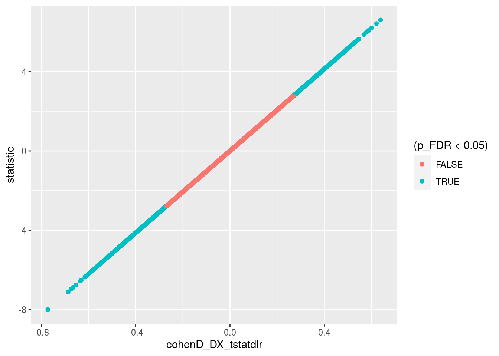

Chapter 12 Code for reading in all the timeseries..
A table that describes the current expected subortical files
These functions are for reading timeseries files
This reads all files and generate PINT to subcortical correlation values for a given subject
the_subcortical_guide <- get_subcortical_guide()## Parsed with column specification:
## cols(
## subcort_hemi = col_character(),
## subcort_ROI = col_character(),
## numvx = col_double(),
## network = col_character()
## )#run_read_subject_subcort_corrs(subcort_outputlist$subid[1])12.1 This was run once in order to detemine the too small subcortical ROIs
read_vx_count <- function(filepath) {
read_csv(filepath, col_names = FALSE) %>%
mutate(network = c('VI','SM','DA','VA', 'LI','FP','DM'))
}
vx_counts <- the_subcortical_guide %>%
select(subcort_hemi, subcort_ROI) %>%
distinct() %>%
mutate(vx_count = str_c(output_base,'/ZHH/out/ciftify_meants/templates/7RSN_roi-',subcort_hemi, subcort_ROI,'_vxcount.txt')) %>%
mutate(vxnum = map(vx_count, ~read_vx_count(.x))) %>%
unnest() %>%
select(subcort_hemi, subcort_ROI, X1, network) %>%
rename(numvx = X1)
write_csv(vx_counts, '../templates/subcort_vxcounts.csv')node_annotations <- get_node_annotations(Yeo7_2011_80verts, the_subcortical_guide)12.1.1 This reads all the subcortical files it can find
Write a func_base and outputprefix cols into the pheno file for the file reading step
pheno <- pheno %>%
mutate(func_base = get_func_base_from_pint_summary_filename(filename,subject, session),
outputprefix = construct_output_prefix(subject, session, func_base)) map2(pheno$outputprefix[1], pheno$dataset[1],
~run_read_all_subject_timeseries_and_wholebrain_corZ(.x, .y))all_corZ_results <- pheno %>%
select(subject, outputprefix, dataset) %>%
mutate(the_corrs = map2(.$outputprefix, .$dataset,
~run_read_all_subject_timeseries_and_wholebrain_corZ(.x, .y)))save(all_corZ_results, file = file.path(output_base, "all_qa_passes_group", "Rdata_cache", "06_wholebrain_results_cache.Rdata"))load(file.path(output_base, "all_qa_passes_group", "Rdata_cache", "06_wholebrain_results_cache.Rdata"))12.1.2 merge with the phenotypic data
results_pheno <- all_corZ_results %>%
inner_join(pheno, by = c("subject", "dataset")) %>%
unnest() results_phenoDX_lm_model_full <- results_pheno %>%
semi_join(node_annotations, by = c("to"="node_name")) %>%
semi_join(node_annotations, by = c("from"="node_name")) %>%
mutate(corZ = weight) %>%
group_by(vertex_type, to, from) %>%
do(tidy(lm(corZ ~ DX + Age_pt + Sex + fd_mean_pt + Scanner,.))) annotated_graph_edges <- DX_lm_model_full %>%
ungroup() %>%
select(to, from) %>%
distinct() %>%
inner_join(node_annotations, by = c("to"="node_name")) %>%
inner_join(node_annotations, by = c("from"="node_name"), suffix = c('_to','_from')) %>%
unite(from_to_type, etype_from, etype_to) %>%
unite(hemis, hemi_from, hemi_to, sep = "") %>%
unite(networks, network_from, network_to, sep = "", remove = FALSE) %>%
mutate(from_to_type = recode(from_to_type, "Cort_SubCort" = "SubCort_Cort")) %>%
mutate(hemis = recode(hemis, "RL" = "LR")) 12.2 filters out some unwanted edges before FDR correction
DX_lm_model <- DX_lm_model_full %>%
ungroup() %>%
inner_join(annotated_graph_edges, by = c("to", "from")) %>%
mutate(withinsubcort = if_else((from_to_type == "SubCort_SubCort") & (subcort_ROI_from == subcort_ROI_to), "drop", "keep")) %>%
filter(withinsubcort == "keep") %>%
select(vertex_type, to, from, term, statistic, p.value) %>%
ungroup() %>%
group_by(term) %>%
mutate(p_FDR = p.adjust(p.value, method = "fdr")) %>%
arrange(p.value)12.3 Make co
source(here('code/R/swirly_plot_helpers.R'))
DX_lm_model %>%
ungroup() %>%
## filtering steps
filter(term == "DXSSD") %>%
filter(vertex_type == "pvertex") %>%
## make a pretty plot
make_swirly_results_plot(pos_label = "SSD > HC",
neg_label = "HC > SSD",
plot_title = "Personalized",
node_annotations = node_annotations)
DX_lm_model %>%
ungroup() %>%
filter(term == "DXSSD") %>%
filter(vertex_type == "tvertex") %>%
make_swirly_results_plot(pos_label = "SSD > HC",
neg_label = "HC > SSD",
plot_title = "Template",
node_annotations = node_annotations)
DX_lm_model %>%
ungroup() %>%
filter(term == "DXSSD") %>%
filter(vertex_type == "tvolume") %>%
make_swirly_results_plot(pos_label = "SSD > HC",
neg_label = "HC > SSD",
plot_title = "Volume",
node_annotations = node_annotations)
12.4 make table FDR corrected Edges that survive correction
DX_lm_model %>%
inner_join(annotated_graph_edges, by = c("to", "from")) %>%
mutate(sig_edge = if_else(p_FDR < 0.05, "sig", "ns"),
stat_pos = if_else(statistic > 0, "pos", "neg")) %>%
filter(term == "DXSSD") %>%
count(vertex_type, from_to_type, sig_edge) %>%
spread(sig_edge, n) %>%
mutate(perc_sig = sig/(ns + sig)*100)## # A tibble: 9 x 6
## # Groups: term [1]
## term vertex_type from_to_type ns sig perc_sig
## <chr> <chr> <chr> <int> <int> <dbl>
## 1 DXSSD pvertex Cort_Cort 2944 216 6.84
## 2 DXSSD pvertex SubCort_Cort 2663 537 16.8
## 3 DXSSD pvertex SubCort_SubCort 260 273 51.2
## 4 DXSSD tvertex Cort_Cort 2936 224 7.09
## 5 DXSSD tvertex SubCort_Cort 2734 466 14.6
## 6 DXSSD tvertex SubCort_SubCort 260 273 51.2
## 7 DXSSD tvolume Cort_Cort 3034 126 3.99
## 8 DXSSD tvolume SubCort_Cort 2883 317 9.91
## 9 DXSSD tvolume SubCort_SubCort 260 273 51.2#' convert from three col graph df to adjacency matrix
uppertri_df_to_agjmat <- function(graph_df) {
names(graph_df) <- c('to', 'from', 'myattr')
matrix_out <- graph_df %>%
graph_from_data_frame(.,directed = F) %>%
get.adjacency(., type = "both", attr = "myattr") %>%
as.matrix()
return(matrix_out)
}
#' go uppertri data to full dataframe for geom_tile
uppertri_df_to_full <- function(graph_df) {
result <- graph_df %>%
uppertri_df_to_agjmat() %>%
as.data.frame() %>%
mutate(to = row.names(.)) %>%
gather(from, value, -to)
return(result)
}DX_lm_model %>%
filter(term == "DXSSD") %>%
mutate(t_filtered = if_else(p_FDR < 0.1, statistic, 0)) %>%
ungroup() %>%
select(vertex_type, to, from, t_filtered) %>%
group_by(vertex_type) %>%
nest() %>%
mutate(uptri = map(data, uppertri_df_to_full)) %>%
unnest(uptri) %>%
mutate(to_lab = factor(to, levels = (node_annotations %>% arrange(subcort_ROI, network))$node_name),
from_lab = factor(from, levels = (node_annotations %>% arrange(subcort_ROI, network))$node_name)) %>%
ggplot(aes(x=to_lab, y=from_lab, fill=value)) +
geom_tile(color = "white") +
scale_fill_gradient2(high = "#b2182b", mid = "white", low = "#2166ac") +
theme(axis.text.x = element_text(angle = 90, hjust = 1)) +
facet_wrap(~vertex_type, ncol = 1) +
labs(title = "T statistic for effect of DX (thesholded)",
x = NULL, y = NULL, fill = "T statistic for DX")
`
full_DX_mat <- DX_lm_model %>%
filter(term == "DXSSD", vertex_type == "pvertex") %>%
ungroup() %>%
select(to, from, statistic) %>%
uppertri_df_to_full()
full_DX_mat %>%
mutate(to_lab = factor(to, levels = node_annotations$node_name),
from_lab = factor(from, levels = node_annotations$node_name)) %>%
ggplot(aes(x=to_lab, y=from_lab, fill=value)) +
geom_tile(color = "white") +
scale_fill_gradient2(high = "#b2182b", mid = "white", low = "#2166ac") +
theme(axis.text.x = element_text(angle = 90, hjust = 1)) +
labs(title = "T statistic for effect of DX",
x = NULL, y = NULL, fill = "T statistic for DX")
calc_fc_weights <- function(lm_df, t_threshold) {
full_DX_mat <- lm_df %>%
ungroup() %>%
select(to, from, statistic) %>%
uppertri_df_to_full() %>%
inner_join(node_annotations, by = c("to"="node_name")) %>%
inner_join(node_annotations, by = c("from"="node_name"))
hypo_cerebullum_to_striatum <- full_DX_mat %>%
filter(subcort_ROI.x == "cerebellum") %>%
filter(subcort_ROI.y == "striatum") %>%
filter(value < -t_threshold) %>%
select(to, from, value)
hyper_subcort_to_SM <- full_DX_mat %>%
filter(etype.x == "SubCort") %>%
filter(etype.y == "Cort") %>%
filter(as.character(network.y) %in% c("SM")) %>%
filter(value > t_threshold) %>%
select(to, from, value)
hyper_subcort_to_VI <- full_DX_mat %>%
filter(etype.x == "SubCort") %>%
filter(etype.y == "Cort") %>%
filter(as.character(network.y) %in% c("VI")) %>%
filter(value > t_threshold) %>%
select(to, from, value)
hyper_subcort_to_DM <- full_DX_mat %>%
filter(etype.x == "SubCort") %>%
filter(etype.y == "Cort") %>%
filter(as.character(network.y) %in% c("DM")) %>%
filter(value > t_threshold) %>%
select(to, from, value)
hypo_subcort_to_FP <- full_DX_mat %>%
filter(etype.x == "SubCort") %>%
filter(etype.y == "Cort") %>%
filter(as.character(network.y) %in% c("FP")) %>%
filter(value < -t_threshold) %>%
select(to, from, value)
hypo_subcort_to_VA <- full_DX_mat %>%
filter(etype.x == "SubCort") %>%
filter(etype.y == "Cort") %>%
filter(as.character(network.y) %in% c("VA")) %>%
filter(value < -t_threshold) %>%
select(to, from, value)
hyper_cortSMVI_to_rest <- full_DX_mat %>%
filter(etype.x == "Cort") %>%
filter(etype.y == "Cort") %>%
filter(as.character(network.x) %in% c("SM", "VI")) %>%
filter(as.character(network.y) %in% c("FP","DA", "VA", "DM")) %>%
filter(value > t_threshold) %>%
select(to, from, value)
hyper_cortVA_to_DA <- full_DX_mat %>%
filter(etype.x == "Cort") %>%
filter(etype.y == "Cort") %>%
filter(as.character(network.x) %in% c("VA")) %>%
filter(as.character(network.y) %in% c("DA")) %>%
filter(value > t_threshold) %>%
select(to, from, value)
hypo_cortDM_to_rest <- full_DX_mat %>%
filter(etype.x == "Cort") %>%
filter(etype.y == "Cort") %>%
filter(as.character(network.x) %in% c("DM")) %>%
filter(!(as.character(network.y) %in% c("DM"))) %>%
filter(value < -t_threshold) %>%
select(to, from, value)
Fz_weigths <-bind_rows(hypo_cortDM_to_rest = hypo_cortDM_to_rest,
hyper_cortSMVI_to_rest = hyper_cortSMVI_to_rest,
hyper_cortVA_to_DA = hyper_cortVA_to_DA,
hyper_subcort_to_DM = hyper_subcort_to_DM,
hypo_subcort_to_FP = hypo_subcort_to_FP,
hypo_subcort_to_VA = hypo_subcort_to_VA,
hyper_subcort_to_SM = hyper_subcort_to_SM,
hyper_subcort_to_VI = hyper_subcort_to_VI,
hypo_cerebullum_to_striatum = hypo_cerebullum_to_striatum,
.id = "direction_edge_group") %>%
separate(direction_edge_group, into = c("effect_direction", "edge_group"), extra = "merge") %>%
rename(edge_FC_weight = value)
return(Fz_weigths)
}t_threshold = 1.1
Fz_DXweigths_pvertex <- DX_lm_model %>%
filter(term == "DXSSD", vertex_type == "pvertex") %>%
ungroup() %>%
calc_fc_weights(.,t_threshold)
Fz_DXweigths_tvertex <- DX_lm_model %>%
filter(term == "DXSSD", vertex_type == "tvertex") %>%
ungroup() %>%
calc_fc_weights(.,t_threshold)
Fz_DXweigths_tvolume <- DX_lm_model %>%
filter(term == "DXSSD", vertex_type == "tvolume") %>%
ungroup() %>%
calc_fc_weights(.,t_threshold)
Fz_DXweigths <- bind_rows(pvertex = Fz_DXweigths_pvertex,
tvertex = Fz_DXweigths_tvertex,
tvolume = Fz_DXweigths_tvolume,
.id = "vertex_type")
Fz_DXweigths %>%
group_by(vertex_type, edge_group, effect_direction) %>%
summarise(median_weight = median(edge_FC_weight)) %>%
ggplot(aes(y = abs(median_weight), x = vertex_type, color = edge_group)) +
geom_point() +
geom_line(aes(group = edge_group))
Fz_DXweigths %>%
count(edge_group, vertex_type, effect_direction) %>%
spread(vertex_type, n)## # A tibble: 9 x 5
## edge_group effect_direction pvertex tvertex tvolume
## <chr> <chr> <int> <int> <int>
## 1 cerebullum_to_striatum hypo 162 162 162
## 2 cortDM_to_rest hypo 402 369 204
## 3 cortSMVI_to_rest hyper 419 405 403
## 4 cortVA_to_DA hyper 147 139 124
## 5 subcort_to_DM hyper 270 225 119
## 6 subcort_to_FP hypo 340 311 299
## 7 subcort_to_SM hyper 287 260 256
## 8 subcort_to_VA hypo 218 216 239
## 9 subcort_to_VI hyper 371 344 267Fz_DXweigths %>%
group_by(vertex_type, edge_group, effect_direction) %>%
summarise(median_weight = median(edge_FC_weight)) %>%
spread(vertex_type, median_weight)## # A tibble: 9 x 5
## # Groups: edge_group [9]
## edge_group effect_direction pvertex tvertex tvolume
## <chr> <chr> <dbl> <dbl> <dbl>
## 1 cerebullum_to_striatum hypo -2.85 -2.85 -2.85
## 2 cortDM_to_rest hypo -2.03 -1.88 -1.55
## 3 cortSMVI_to_rest hyper 1.71 1.78 1.75
## 4 cortVA_to_DA hyper 1.96 2.01 1.88
## 5 subcort_to_DM hyper 2.05 1.82 1.62
## 6 subcort_to_FP hypo -2.00 -1.91 -1.87
## 7 subcort_to_SM hyper 2.42 2.40 2.23
## 8 subcort_to_VA hypo -1.72 -1.89 -1.80
## 9 subcort_to_VI hyper 3.00 2.79 2.27write_csv(Fz_DXweigths_pvertex, file.path(output_base, "all_qa_passes_group", "weighted_subject_FC_weigths", "SSD4cohorts_DXtweigths_pvertex.csv"))
write_csv(Fz_DXweigths_tvertex, file.path(output_base, "all_qa_passes_group", "weighted_subject_FC_weigths", "SSD4cohorts_DXtweigths_tvertex.csv"))
write_csv(Fz_DXweigths_tvolume, file.path(output_base, "all_qa_passes_group", "weighted_subject_FC_weigths", "SSD4cohorts_DXtweigths_tvolume.csv"))#' calculates a subjects weigthed FC score from their edgewise values
#'
#' @param subject_edges_df tibble with columns subject, to, from, and weight
#' @param edge_weights tibble with columns effect_direction, edge_group, to, from, and edge_FC_weight
#'
#' @return tibble with columns subject, dataset, effect_direction, edge_group, FC_subtype and wFC_score
#'
#' @examples
calc_subjects_wFC_score <- function(subject_edges_df, edge_weights) {
result <- subject_edges_df %>%
ungroup() %>%
group_by(subject, dataset) %>%
nest() %>%
mutate(uptri = map(data, uppertri_df_to_full)) %>%
unnest(uptri) %>%
inner_join(edge_weights, by = c("to", "from")) %>%
ungroup() %>%
mutate(wcorZ = abs(edge_FC_weight) * value) %>%
group_by(subject, dataset, effect_direction, edge_group) %>%
summarise(wFC_score = sum(wcorZ)/sum(abs(edge_FC_weight)),
mFC_score = mean(value)) %>%
ungroup()
return(result)
}pvertex_subject_FC_scores <- results_pheno %>%
ungroup() %>%
filter(vertex_type == "pvertex") %>%
select(subject, dataset, to, from, weight) %>%
calc_subjects_wFC_score(Fz_DXweigths_pvertex)
tvertex_subject_FC_scores <- results_pheno %>%
ungroup() %>%
filter(vertex_type == "tvertex") %>%
select(subject, dataset, to, from, weight) %>%
calc_subjects_wFC_score(Fz_DXweigths_tvertex)
tvolume_subject_FC_scores <- results_pheno %>%
ungroup() %>%
filter(vertex_type == "tvolume") %>%
select(subject, dataset, to, from, weight) %>%
calc_subjects_wFC_score(Fz_DXweigths_tvolume)
FC_scores_together <- bind_rows(
pvertex = pvertex_subject_FC_scores,
tvertex = tvertex_subject_FC_scores,
tvolume = tvolume_subject_FC_scores,
.id = "vertex_type"
)
write_csv(FC_scores_together, file.path(output_base,
"all_qa_passes_group",
"weighted_subject_FC_scores",
"SSD4cohorts_DXweighted_subject_scores.csv"))FC_scores_lmfit <- FC_scores_together %>%
inner_join(pheno, by = c("subject", "dataset")) %>%
ungroup() %>%
group_by(edge_group, effect_direction, vertex_type) %>%
do(tidy(lm(wFC_score ~ DX + Age_pt + Sex + fd_mean_pt + Site,.)))
FC_scores_lmfit %>%
select(edge_group, effect_direction, term, statistic, p.value) %>%
filter(term == "DXSSD") %>%
knitr::kable()## Adding missing grouping variables: `vertex_type`| vertex_type | edge_group | effect_direction | term | statistic | p.value |
|---|---|---|---|---|---|
| pvertex | cerebullum_to_striatum | hypo | DXSSD | -5.981823 | 0e+00 |
| tvertex | cerebullum_to_striatum | hypo | DXSSD | -5.981823 | 0e+00 |
| tvolume | cerebullum_to_striatum | hypo | DXSSD | -5.981823 | 0e+00 |
| pvertex | cortDM_to_rest | hypo | DXSSD | -6.713980 | 0e+00 |
| tvertex | cortDM_to_rest | hypo | DXSSD | -8.129964 | 0e+00 |
| tvolume | cortDM_to_rest | hypo | DXSSD | -5.009878 | 8e-07 |
| pvertex | cortSMVI_to_rest | hyper | DXSSD | 8.110019 | 0e+00 |
| tvertex | cortSMVI_to_rest | hyper | DXSSD | 10.064882 | 0e+00 |
| tvolume | cortSMVI_to_rest | hyper | DXSSD | 5.681912 | 0e+00 |
| pvertex | cortVA_to_DA | hyper | DXSSD | 4.615709 | 5e-06 |
| tvertex | cortVA_to_DA | hyper | DXSSD | 6.636692 | 0e+00 |
| tvolume | cortVA_to_DA | hyper | DXSSD | 5.064163 | 6e-07 |
| pvertex | subcort_to_DM | hyper | DXSSD | 5.711771 | 0e+00 |
| tvertex | subcort_to_DM | hyper | DXSSD | 6.359039 | 0e+00 |
| tvolume | subcort_to_DM | hyper | DXSSD | 6.566259 | 0e+00 |
| pvertex | subcort_to_FP | hypo | DXSSD | -6.368152 | 0e+00 |
| tvertex | subcort_to_FP | hypo | DXSSD | -7.222145 | 0e+00 |
| tvolume | subcort_to_FP | hypo | DXSSD | -7.764750 | 0e+00 |
| pvertex | subcort_to_SM | hyper | DXSSD | 6.349540 | 0e+00 |
| tvertex | subcort_to_SM | hyper | DXSSD | 7.285989 | 0e+00 |
| tvolume | subcort_to_SM | hyper | DXSSD | 7.277427 | 0e+00 |
| pvertex | subcort_to_VA | hypo | DXSSD | -5.577413 | 0e+00 |
| tvertex | subcort_to_VA | hypo | DXSSD | -6.477915 | 0e+00 |
| tvolume | subcort_to_VA | hypo | DXSSD | -7.797026 | 0e+00 |
| pvertex | subcort_to_VI | hyper | DXSSD | 7.487524 | 0e+00 |
| tvertex | subcort_to_VI | hyper | DXSSD | 7.809095 | 0e+00 |
| tvolume | subcort_to_VI | hyper | DXSSD | 6.697116 | 0e+00 |
FC_scores_lmfit %>%
group_by(vertex_type, edge_group, effect_direction) %>%
filter(term == "DXSSD",
str_detect(edge_group,"subcort")) %>%
ggplot(aes(y = abs(statistic), x = rev(vertex_type), color = edge_group)) +
geom_point() +
geom_line(aes(group = edge_group))
FC_scores_lmfit <- FC_scores_together %>%
inner_join(pheno, by = c("subject", "dataset")) %>%
ungroup() %>%
group_by(edge_group, vertex_type, effect_direction, Site) %>%
do(tidy(lm(wFC_score ~ DX + Age_pt + Sex + fd_mean_pt,.)))
FC_scores_lmfit %>%
select(edge_group, vertex_type, Site, term, statistic, p.value) %>%
filter(term == "DXSSD") %>%
knitr::kable()## Adding missing grouping variables: `effect_direction`| effect_direction | edge_group | vertex_type | Site | term | statistic | p.value |
|---|---|---|---|---|---|---|
| hypo | cerebullum_to_striatum | pvertex | CMH | DXSSD | -3.3534825 | 0.0011175 |
| hypo | cerebullum_to_striatum | pvertex | COBRE | DXSSD | -1.8857567 | 0.0649193 |
| hypo | cerebullum_to_striatum | pvertex | ds000030 | DXSSD | -3.0826534 | 0.0024948 |
| hypo | cerebullum_to_striatum | pvertex | ZHH | DXSSD | -2.9882418 | 0.0031784 |
| hypo | cerebullum_to_striatum | tvertex | CMH | DXSSD | -3.3534825 | 0.0011175 |
| hypo | cerebullum_to_striatum | tvertex | COBRE | DXSSD | -1.8857567 | 0.0649193 |
| hypo | cerebullum_to_striatum | tvertex | ds000030 | DXSSD | -3.0826534 | 0.0024948 |
| hypo | cerebullum_to_striatum | tvertex | ZHH | DXSSD | -2.9882418 | 0.0031784 |
| hypo | cerebullum_to_striatum | tvolume | CMH | DXSSD | -3.3534825 | 0.0011175 |
| hypo | cerebullum_to_striatum | tvolume | COBRE | DXSSD | -1.8857567 | 0.0649193 |
| hypo | cerebullum_to_striatum | tvolume | ds000030 | DXSSD | -3.0826534 | 0.0024948 |
| hypo | cerebullum_to_striatum | tvolume | ZHH | DXSSD | -2.9882418 | 0.0031784 |
| hypo | cortDM_to_rest | pvertex | CMH | DXSSD | -3.1173421 | 0.0023657 |
| hypo | cortDM_to_rest | pvertex | COBRE | DXSSD | -1.7195664 | 0.0914590 |
| hypo | cortDM_to_rest | pvertex | ds000030 | DXSSD | -3.7485854 | 0.0002642 |
| hypo | cortDM_to_rest | pvertex | ZHH | DXSSD | -4.2714684 | 0.0000307 |
| hypo | cortDM_to_rest | tvertex | CMH | DXSSD | -4.1848601 | 0.0000602 |
| hypo | cortDM_to_rest | tvertex | COBRE | DXSSD | -1.9559975 | 0.0558472 |
| hypo | cortDM_to_rest | tvertex | ds000030 | DXSSD | -3.8287460 | 0.0001975 |
| hypo | cortDM_to_rest | tvertex | ZHH | DXSSD | -5.2842366 | 0.0000003 |
| hypo | cortDM_to_rest | tvolume | CMH | DXSSD | -3.9681343 | 0.0001342 |
| hypo | cortDM_to_rest | tvolume | COBRE | DXSSD | -3.9463211 | 0.0002392 |
| hypo | cortDM_to_rest | tvolume | ds000030 | DXSSD | -3.1181371 | 0.0022313 |
| hypo | cortDM_to_rest | tvolume | ZHH | DXSSD | -1.6065369 | 0.1098254 |
| hyper | cortSMVI_to_rest | pvertex | CMH | DXSSD | 4.2021722 | 0.0000564 |
| hyper | cortSMVI_to_rest | pvertex | COBRE | DXSSD | 2.3769126 | 0.0211731 |
| hyper | cortSMVI_to_rest | pvertex | ds000030 | DXSSD | 3.0984617 | 0.0023741 |
| hyper | cortSMVI_to_rest | pvertex | ZHH | DXSSD | 5.6380243 | 0.0000001 |
| hyper | cortSMVI_to_rest | tvertex | CMH | DXSSD | 5.7126595 | 0.0000001 |
| hyper | cortSMVI_to_rest | tvertex | COBRE | DXSSD | 2.9479669 | 0.0047813 |
| hyper | cortSMVI_to_rest | tvertex | ds000030 | DXSSD | 4.2606756 | 0.0000383 |
| hyper | cortSMVI_to_rest | tvertex | ZHH | DXSSD | 6.2016302 | 0.0000000 |
| hyper | cortSMVI_to_rest | tvolume | CMH | DXSSD | 2.8437881 | 0.0053776 |
| hyper | cortSMVI_to_rest | tvolume | COBRE | DXSSD | 1.3465369 | 0.1839696 |
| hyper | cortSMVI_to_rest | tvolume | ds000030 | DXSSD | 3.1568781 | 0.0019732 |
| hyper | cortSMVI_to_rest | tvolume | ZHH | DXSSD | 4.0110159 | 0.0000870 |
| hyper | cortVA_to_DA | pvertex | CMH | DXSSD | 0.4867116 | 0.6274968 |
| hyper | cortVA_to_DA | pvertex | COBRE | DXSSD | 0.9264011 | 0.3585174 |
| hyper | cortVA_to_DA | pvertex | ds000030 | DXSSD | 2.7689037 | 0.0064283 |
| hyper | cortVA_to_DA | pvertex | ZHH | DXSSD | 4.2230614 | 0.0000374 |
| hyper | cortVA_to_DA | tvertex | CMH | DXSSD | 1.5957401 | 0.1136106 |
| hyper | cortVA_to_DA | tvertex | COBRE | DXSSD | 2.0860644 | 0.0418955 |
| hyper | cortVA_to_DA | tvertex | ds000030 | DXSSD | 2.5497868 | 0.0119129 |
| hyper | cortVA_to_DA | tvertex | ZHH | DXSSD | 5.9690723 | 0.0000000 |
| hyper | cortVA_to_DA | tvolume | CMH | DXSSD | 0.9331152 | 0.3529428 |
| hyper | cortVA_to_DA | tvolume | COBRE | DXSSD | 1.1336427 | 0.2621440 |
| hyper | cortVA_to_DA | tvolume | ds000030 | DXSSD | 2.3626140 | 0.0195959 |
| hyper | cortVA_to_DA | tvolume | ZHH | DXSSD | 4.3826699 | 0.0000194 |
| hyper | subcort_to_DM | pvertex | CMH | DXSSD | 1.4445725 | 0.1516132 |
| hyper | subcort_to_DM | pvertex | COBRE | DXSSD | 2.3510397 | 0.0225471 |
| hyper | subcort_to_DM | pvertex | ds000030 | DXSSD | 3.4960804 | 0.0006422 |
| hyper | subcort_to_DM | pvertex | ZHH | DXSSD | 3.5391379 | 0.0005053 |
| hyper | subcort_to_DM | tvertex | CMH | DXSSD | 2.1918853 | 0.0306399 |
| hyper | subcort_to_DM | tvertex | COBRE | DXSSD | 2.0905878 | 0.0414705 |
| hyper | subcort_to_DM | tvertex | ds000030 | DXSSD | 3.2093325 | 0.0016677 |
| hyper | subcort_to_DM | tvertex | ZHH | DXSSD | 3.9494379 | 0.0001105 |
| hyper | subcort_to_DM | tvolume | CMH | DXSSD | 2.8144136 | 0.0058550 |
| hyper | subcort_to_DM | tvolume | COBRE | DXSSD | 1.4072821 | 0.1652933 |
| hyper | subcort_to_DM | tvolume | ds000030 | DXSSD | 3.9477105 | 0.0001272 |
| hyper | subcort_to_DM | tvolume | ZHH | DXSSD | 3.8866662 | 0.0001406 |
| hypo | subcort_to_FP | pvertex | CMH | DXSSD | -2.8303580 | 0.0055912 |
| hypo | subcort_to_FP | pvertex | COBRE | DXSSD | -2.6990373 | 0.0093582 |
| hypo | subcort_to_FP | pvertex | ds000030 | DXSSD | -2.4055277 | 0.0175248 |
| hypo | subcort_to_FP | pvertex | ZHH | DXSSD | -3.8678523 | 0.0001510 |
| hypo | subcort_to_FP | tvertex | CMH | DXSSD | -3.1923633 | 0.0018717 |
| hypo | subcort_to_FP | tvertex | COBRE | DXSSD | -2.8376839 | 0.0064650 |
| hypo | subcort_to_FP | tvertex | ds000030 | DXSSD | -2.8696921 | 0.0047812 |
| hypo | subcort_to_FP | tvertex | ZHH | DXSSD | -4.5553544 | 0.0000094 |
| hypo | subcort_to_FP | tvolume | CMH | DXSSD | -3.5647322 | 0.0005538 |
| hypo | subcort_to_FP | tvolume | COBRE | DXSSD | -2.5661304 | 0.0132045 |
| hypo | subcort_to_FP | tvolume | ds000030 | DXSSD | -2.7864546 | 0.0061087 |
| hypo | subcort_to_FP | tvolume | ZHH | DXSSD | -5.8464794 | 0.0000000 |
| hyper | subcort_to_SM | pvertex | CMH | DXSSD | 3.2832951 | 0.0014020 |
| hyper | subcort_to_SM | pvertex | COBRE | DXSSD | 3.7221124 | 0.0004864 |
| hyper | subcort_to_SM | pvertex | ds000030 | DXSSD | 2.5036323 | 0.0135025 |
| hyper | subcort_to_SM | pvertex | ZHH | DXSSD | 3.7145795 | 0.0002679 |
| hyper | subcort_to_SM | tvertex | CMH | DXSSD | 3.7828435 | 0.0002605 |
| hyper | subcort_to_SM | tvertex | COBRE | DXSSD | 4.5806882 | 0.0000293 |
| hyper | subcort_to_SM | tvertex | ds000030 | DXSSD | 3.0852984 | 0.0024742 |
| hyper | subcort_to_SM | tvertex | ZHH | DXSSD | 4.0849576 | 0.0000651 |
| hyper | subcort_to_SM | tvolume | CMH | DXSSD | 3.9120423 | 0.0001644 |
| hyper | subcort_to_SM | tvolume | COBRE | DXSSD | 3.2959631 | 0.0017714 |
| hyper | subcort_to_SM | tvolume | ds000030 | DXSSD | 3.1862816 | 0.0017961 |
| hyper | subcort_to_SM | tvolume | ZHH | DXSSD | 4.5618417 | 0.0000091 |
| hypo | subcort_to_VA | pvertex | CMH | DXSSD | -2.7211124 | 0.0076400 |
| hypo | subcort_to_VA | pvertex | COBRE | DXSSD | -2.8067964 | 0.0070267 |
| hypo | subcort_to_VA | pvertex | ds000030 | DXSSD | -1.6293917 | 0.1055964 |
| hypo | subcort_to_VA | pvertex | ZHH | DXSSD | -3.7591648 | 0.0002271 |
| hypo | subcort_to_VA | tvertex | CMH | DXSSD | -3.2278705 | 0.0016731 |
| hypo | subcort_to_VA | tvertex | COBRE | DXSSD | -2.0675986 | 0.0436703 |
| hypo | subcort_to_VA | tvertex | ds000030 | DXSSD | -2.2925071 | 0.0234464 |
| hypo | subcort_to_VA | tvertex | ZHH | DXSSD | -4.4932262 | 0.0000122 |
| hypo | subcort_to_VA | tvolume | CMH | DXSSD | -4.0176713 | 0.0001120 |
| hypo | subcort_to_VA | tvolume | COBRE | DXSSD | -2.1588428 | 0.0354984 |
| hypo | subcort_to_VA | tvolume | ds000030 | DXSSD | -3.5319065 | 0.0005677 |
| hypo | subcort_to_VA | tvolume | ZHH | DXSSD | -5.1371911 | 0.0000007 |
| hyper | subcort_to_VI | pvertex | CMH | DXSSD | 3.1767145 | 0.0019660 |
| hyper | subcort_to_VI | pvertex | COBRE | DXSSD | 3.2543432 | 0.0020010 |
| hyper | subcort_to_VI | pvertex | ds000030 | DXSSD | 2.8334297 | 0.0053232 |
| hyper | subcort_to_VI | pvertex | ZHH | DXSSD | 4.7891657 | 0.0000034 |
| hyper | subcort_to_VI | tvertex | CMH | DXSSD | 3.7818884 | 0.0002614 |
| hyper | subcort_to_VI | tvertex | COBRE | DXSSD | 3.2256365 | 0.0021754 |
| hyper | subcort_to_VI | tvertex | ds000030 | DXSSD | 2.4553657 | 0.0153650 |
| hyper | subcort_to_VI | tvertex | ZHH | DXSSD | 5.0612146 | 0.0000010 |
| hyper | subcort_to_VI | tvolume | CMH | DXSSD | 3.3615692 | 0.0010885 |
| hyper | subcort_to_VI | tvolume | COBRE | DXSSD | 3.2342248 | 0.0021218 |
| hyper | subcort_to_VI | tvolume | ds000030 | DXSSD | 1.3793930 | 0.1700886 |
| hyper | subcort_to_VI | tvolume | ZHH | DXSSD | 4.4290350 | 0.0000160 |
FC_scores_lmfit %>%
filter(term == "DXSSD",
str_detect(edge_group,"subcort")) %>%
ggplot(aes(y = abs(statistic), x = rev(vertex_type), color = edge_group)) +
geom_point() +
geom_line(aes(group = edge_group)) +
facet_wrap(~Site, nrow = 1)
SSD_cors <- FC_scores_together %>%
inner_join(pheno, by = c("subject", "dataset")) %>%
ungroup() %>%
filter(DX == "SSD", vertex_type == "pvertex") %>%
select(subject, dataset, edge_group, wFC_score) %>%
spread(edge_group, wFC_score) %>%
select(-subject, -dataset) %>%
cor(.)
heatmap(abs(SSD_cors))HC_cors <- FC_scores_together %>%
inner_join(pheno, by = c("subject", "dataset")) %>%
ungroup() %>%
filter(DX == "CTRL", vertex_type == "pvertex") %>%
select(subject, dataset, edge_group, wFC_score) %>%
spread(edge_group, wFC_score) %>%
select(-subject, -dataset) %>%
cor(.)
heatmap(abs(HC_cors))# Marginal densities along x axis
plot_DX_scatter_elipsed <- function(df, x, y) {
#the tidy eval ness
xvar <- enquo(x)
yvar <- enquo(y)
# make the main scatte bit using above
main_scatter <- ggplot(data = df,
aes(x = !!xvar, y = !!yvar, color = DX)) +
geom_point(alpha = 0.7, size = 0.7) +
stat_ellipse() +
scale_color_manual(values = c("grey20","red"))
xdens <- axis_canvas(main_scatter, axis = "x")+
geom_density(data = df, aes(x = !!xvar, fill = DX),
alpha = 0.5, size = 0.2) +
scale_fill_manual(values = c("grey20","red"))
ydens <- axis_canvas(main_scatter, axis = "y", coord_flip = TRUE)+
geom_density(data = df, aes(x = !!yvar, fill = DX),
alpha = 0.5, size = 0.2) +
scale_fill_manual(values = c("grey20","red")) +
coord_flip()
#putting the peices together
p1 <- insert_xaxis_grob(main_scatter, xdens, grid::unit(.2, "null"), position = "top")
p2<- insert_yaxis_grob(p1, ydens, grid::unit(.2, "null"), position = "right")
return(p2)
}library(cowplot)
fplot <- FC_scores_together %>%
inner_join(pheno, by = c("subject", "dataset")) %>%
ungroup() %>%
filter(vertex_type == "pvertex") %>%
unite(directed_edge_group, effect_direction, edge_group) %>%
unite(dat_sub, dataset, subject) %>%
select(dat_sub, Site, DX, directed_edge_group, wFC_score) %>%
spread(directed_edge_group, wFC_score) ggdraw(plot_DX_scatter_elipsed(fplot, x = hyper_subcort_to_VI, y = hypo_cerebullum_to_striatum))
ggdraw(plot_DX_scatter_elipsed(fplot, x = hyper_subcort_to_SM, y = hypo_cerebullum_to_striatum))
fig1 <- fplot %>%
ggplot(aes(y = hypo_subcort_to_FP, x = DX, color = DX)) +
geom_boxplot(outlier.shape = NA) +
geom_dotplot(binaxis = 'y', stackdir = 'center', binwidth = 0.01, alpha = 0.5) +
scale_color_manual(values = c("grey20","red")) +
facet_wrap( ~ Site, ncol = 4) +
labs(x = NULL)
#ggsave(fig1, filename = 'VA_results.png',height = 8, width = 5)
fig1
fig1 <- fplot %>%
ggplot(aes(y = hyper_subcort_to_SM, x = DX, color = DX)) +
geom_boxplot(outlier.shape = NA) +
geom_dotplot(binaxis = 'y', stackdir = 'center', binwidth = 0.01, alpha = 0.5) +
scale_color_manual(values = c("grey20","red")) +
facet_wrap( ~ Site, ncol = 4) +
labs(x = NULL)
#ggsave(fig1, filename = 'VA_results.png',height = 8, width = 5)
fig1